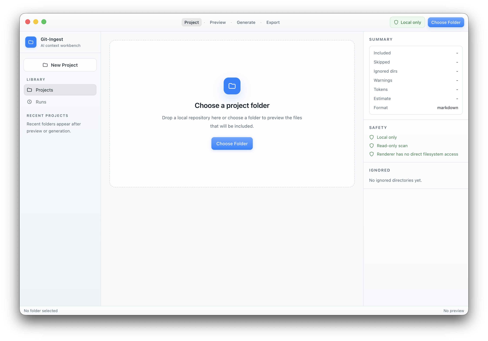
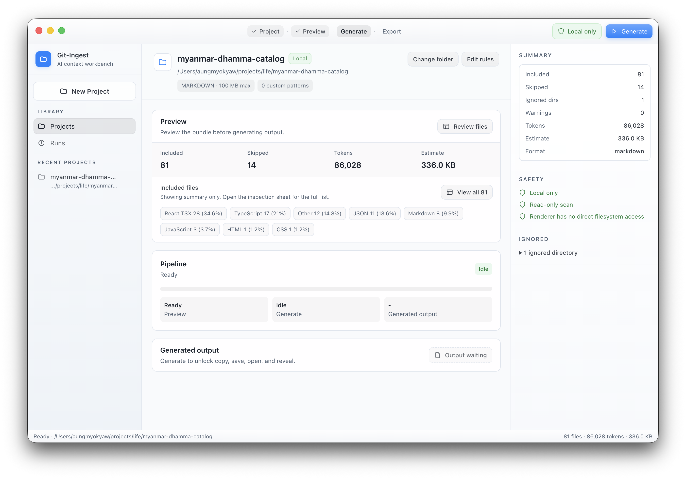
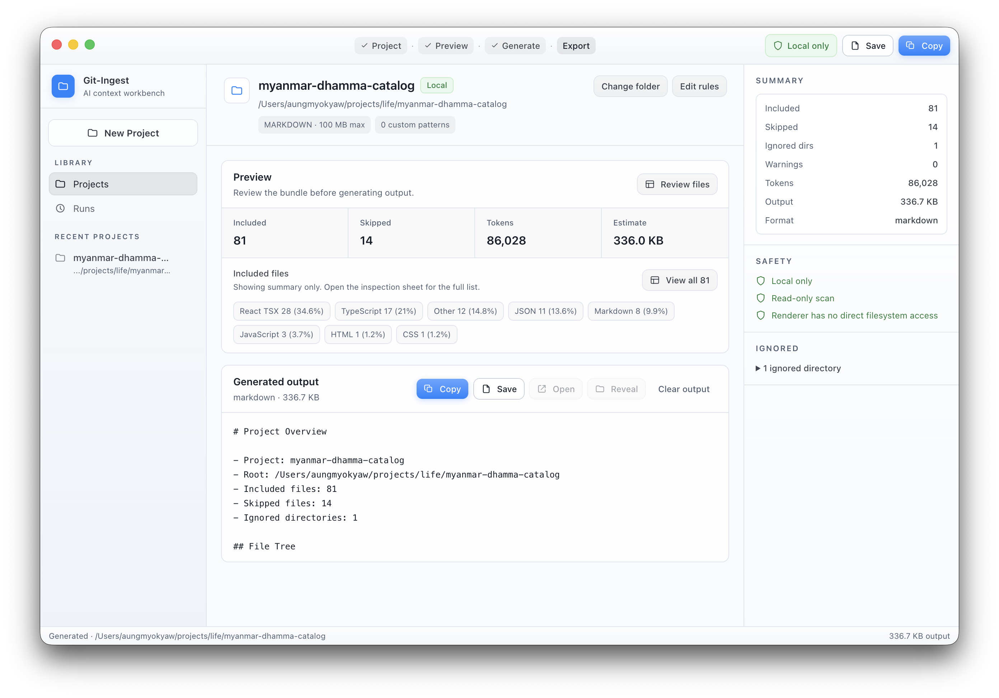
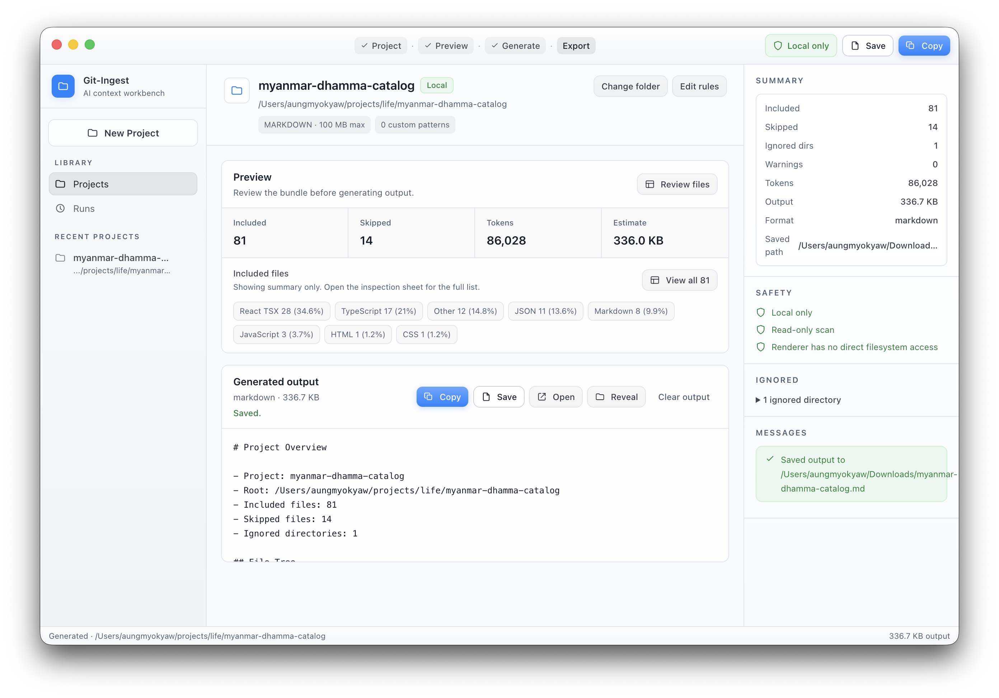

Native-feeling desktop flow
Designed like a quiet macOS developer utility, not a noisy SaaS dashboard.
Git-Ingest scans a local project, applies simple include and exclude rules, previews the final bundle, then exports AI-readable markdown or text without giving the renderer direct filesystem access.
Purpose
The app is built for focused desktop work: pick a project, control what goes in, inspect the bundle, and export quickly.
Designed like a quiet macOS developer utility, not a noisy SaaS dashboard.
Include, exclude, and size rules make the generated bundle predictable.
Generate clean markdown or plain text that is easy to paste into LLM workflows.
See the included files, warnings, token estimate, and final context shape before copying.
Once output exists, copy and file export become the dominant actions.
Use the secure desktop app to inspect, generate, copy, and export from one focused interface.
Workflow
The entire product is built around one clear job: package the useful parts of a codebase into portable context for AI-assisted development.
Choose the local folder you want to turn into context.
Control file patterns, max size, ignored paths, and output format.
Inspect what will be included before anything is generated.
Create markdown or text with project structure and file contents.
Paste into ChatGPT, Claude, Gemini, coding agents, or your own tools.




Desktop workflow
1. Select a local project folder
2. Review included and excluded files
3. Generate an AI-readable context bundle
4. Copy or export the result
OK project scanned locally
OK rules applied before export
OK output ready for AI workflowsOutput
Use Git-Ingest when you need to share source context with an LLM without dumping random build artifacts, secrets, dependencies, or irrelevant folders.
Security posture
Git-Ingest reassures developers that local project access is handled deliberately.
Filesystem actions are mediated through preload and main-process IPC.
The desktop flow starts from a local folder and produces local output.
Users can see what patterns are included and excluded before export.
Copy and save actions are explicit, visible, and tied to generated output.
Desktop packaging
Git-Ingest is a local-first Electron desktop app with platform packaging and secure renderer boundaries. Get the newest build from GitHub Releases or install via Homebrew.
brew tap AungMyoKyaw/homebrew-tap
brew install --cask git-ingest